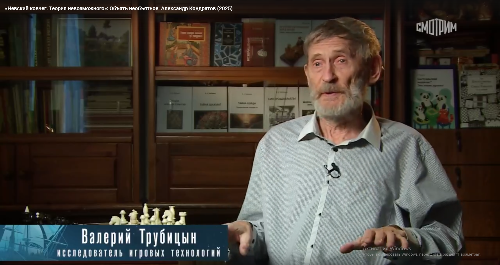
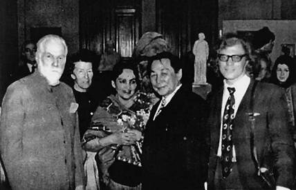

|
Кондратов Александр Михайлович 30
стр шр.10
МЕМОРИАЛ КОНДРАТОВА
В память 70-летия со дня рождения.
Кондратов
Александр Михайлович (1937 - 1993) - учёный, журналист, прозаик, поэт,
драматург, действительный член Географического общества, кандидат
филологических наук, известный атлантолог, член Научного совета по
кибернетике АН СССР, автор свыше 70 научных работ и книг о погибших
цивилизациях и проблемах кибернетики, математической лингвистики,
искусственного интеллекта, моделирования творчества. Один из основателей
Федерации шашек рэндзю. Известен также тем, что совместно с Ю.П.
Филатовым в 1982 году организовал в Институте физической культуры им.
П.Ф. Лесгафта в рамках народного университета факультет по изучению го.
А. Кондратов родом из г. Белгорода, полубелорус. Его отец был летчиком,
погибшим на фронте..
Своё образование Александр Михайлович начал в Ленинградской областной
школе милиции, из которой он ушёл перед самым её окончанием. В
институте физкультуры в беге на 100 м имел результат 10,9 сек. Занимался
йогой и подводным плаванием. Окнчил институт им.Лесфагта, затем получил
диплом филолога. В 1963 году входил в состав группы филологов под
руководством Ю.В.Кнорозова по комплексоной проблеме
"Кибернетика" при Президиуме АН СССР, что позволило ему
написать кандидатскую работу по теме: «Расшифровка письменности
острова Пасхи с помощью ЭВМ».
Что касается
его отношения к своему казацкому происхождению, то об этом достаточно
сказано у Бориса Алмазова (с которым я, разумеется, общаюсь). Вся
история казачества - это очень сложная тема. Казаки не только являлись
надёжными защитниками отечества, но при случае выказывали полную
независимость от той или иной правящей верхушки - вплоть до
разрушительных восстаний, начиная со Стеньки Разина и Емельяна Пугачёва
(они оба - донские казаки). И отнюдь не стыдились, продолжая
традиции Киевской Руси, элементарных грабительских
"походов" не только в Поволжье, но и в сопредельные страны
вплоть до Персии. Помня об этом, большевики не раз огнём и мечом
исребляли казацкую вольницу.
И вот после вековых трагедий мы видим и добрую память о казацкой
культуре, и её забвение, и попытки "ряжёных" превращать
указанную культуру и историю славного казачьего племени в какую-то
пародию. И Кондратов видел это, отделяя одно от другого. Разумеется,
такая взрывоопасная смесь не могла не оказать на него влияния и в
творческом плане.
Здесь
мы невольно затронули всеобщую проблему позиционирования в писательском
мире. Оказывается, вовсе недостаточно владения пером. Всегда очень остро
стоит проблема признания и у собратьев по перу, и у народа, и
у власти... И у Вечности... То есть пишущий человек непременно
должен вращаться в атмосфере студенческой поры, диспутов,
творческих вечеров, тусовок, дружеских компаний и т.д. И при этом вполне
определённо играть роль писателя - вплоть до причёски и манеры
одеваться. Потом начинается погоня за тиражами и титулами, желание
во что бы то ни стало стать профессиональным писателем - и, разумеется,
членом писательского союза. (Что у представителей второй культуры всегда
принимало анекдотические формы: вот я вас, ребята, ненавижу, но в свою
шайку вы уж меня непременно примите). Этой растерянности не миновал и
Кондратов. По сути, для него это было трагедией: пресмыкаться
перед литературными чиновниками при его складе характера. И в
конце концов он "рубанул шашкой по тэйблу", полностью уйдя в
свободное творчество. Думаю, что мы с ним, оказавшись в граде
Петра, были оба далеки от от внешних атрибутов казачества, но вот
щепотка земли с пепелища родимого дома и ветка полыни - это о
нас.
О
литературном творчестве А. Кондратова пишутся и ещё будут написаны горы
книг. Но я хотел бы предостеречь публикаторов от легкомысленного
отношения к его памяти. Следовало бы прежде всего соблюдать права
его наследников. И уж ни в коем случае, гонясь за сенсациями, не
публиковать в интернете его слишком откровенную прозу. Ведь интернет -
это пространство для всех возрастов. Надо всегда помнить об этом.
К
увлечению йогой нам бы надо тоже относиться осторожно. Там есть полезные
моменты, но в целом мы, северный народ, имеем и другой климат, и другую
энергетику. По ряду причин мы не можем мидитировать на тощее брюхо
многими часами, сидя под пальмой и не заботясь ни о чём. С подачи В.
Налимова и Ж. Дрогалиной я, например, отдал должное этой
увлекательной теме в стихотворении "Дыхание и круг", где есть
такие слова:
ОМ -
лотос с тысячью лепестков -
Предчувствие совершенства, единство всего,
Избавление от условностей и оков -
Руки, распахнутые для объятий
Чередованья пространств и веков!
АН -
речи исток, зарождение смыслов,
Логос, дающий всему имена,
Голос, рождающий буквы и числа,
Сеющий истину и семена...
Но,
видимо, и в этой сфере Александр Михайлович был склонен к максимализму.
Ещё
одна тема. Трудно даже представить совмещение Кондратова с интернетом.
Жаль, что он не дожил до нашей эпохи. Тепрь мы имеем лишь крохи его
творчества в общем эфире. Хотя, разумеется, не всё можно там
выставлять.
Таковы краткие сведения об этом разностороннем человеке, которого
невозможно втиснуть ни в одну привычную схему. Даже собственная жизнь
представлялась ему игральной доской с обширной мозаикой исследовательских
комбинаций. Такова полифония человека-игры, далеко опередившего тех, кто
только нащупывает путь к обобщенным игровым технологиям. А ведь он
покинул нас в полном расцвете творческих сил - в 56 лет, когда многие из
нас только начинают созревать для того, чтобы сказать самое
главное.
В. Трубицын

На канале Россия-Культура 23 марта 2025 года был впервые показан телефильм Анастасии Высоцкой в программе «Невский ковчег» об Александре Кондратове с участием Б.Алмазова и В.Трубицына: ТЕОРИЯ НЕВОЗМОЖНОГО.
Лев
Лосев
HOMO LUDENS УМЕР
Из
книги «Меандр»
Лев Лосев (род. в 1937 г. в
Ленинграде) — поэт, эссеист, автор книг стихов «Чудесный десант» (1985) и
«Тайный советник» (1987). Живёт в США.
Пришло письмо от Ерёмина. Как всегда напечатанное крупным шрифтом через
три интервала, оно занимает полстранички. (Лапидарный стиль Ерёмина не
лишен чувства, даже страсти; вернувшись несколько лет тому назад из
Москвы в Ленинград, он охарактеризовал родной город следующим образом: «Развалины
некрополя, населённые шпаной и ворьём»). На этот раз среди пятнадцати строк письма
была такая: «Сэнди Кондратова похоронили, прободение, перитонит». Я сообщил
печальную новость по телефону двум-трём общим знакомым. Знакомые пожелали
покойному царствия небесного, подивились, что умер не старый и такой,
казалось, здоровяк - и перешли к обсуждению дел, живо пока ещё
трепещущих.
Лет сорок тому назад мы открыли Розанова. Розановские фразы вспыхивали
то и дело в сыром хворосте нашей собственной юношеской невнятицы.
Кондратов с особым удовольствием выговаривал: «Родила червяшка червяшку,
червяшка поползала и умерла». И добавлял с легким вздохом, изображая
очаровательное розановское лицемерие: «Такова и жизнь наша».
I
Синие чернила на белой бумаге я вспоминаю в первую очередь, вспоминая
Кондратова. Вначале он исписывал кипы общих тетрадей — стихами, своими и
выуженными в публичке из старых книг и журналов, прозой, математическими
выкладками. Позднее, обзаведясь машинкой, Саша стал выделывать игрушечные
книжечки в четвертушку листа. По складу своего ума, характера и таланта
Саша имел великого предшественника в русской литературе — Андрея
Белого.
Будто бы синеглазый мистик, экзальтированный структуралист,
насмешник-«гоголёк» вдруг возродился в нашу дурную эпоху и воплотился в
рыжевато-белокурого мальчика из Белгорода, одетого в чернильно-синюю
милицейскую форму. Отец погиб на фронте, Сашу опекал дядя, милицейский начальник.
Он и пристроил племянника после школы в ленинградскую школу милиции.
Школа помещалась в здании Главного Штаба. Однажды Сашу послали красить
крышу, и он говорил, что той же рыжей кровельной краской решил написать
свое имя на чугунных мошонках коней, несущих колесницу русской Славы, -
по букве на яйцо. Для САШАКОНДРАТОВ яйца не хватало, и это будто бы дало
ему идею псевдонима: СЭНДИКОНРАД! (с восклицательным знаком). Возможно,
на крыше построенного зодчим Росси здания таким образом был заключен завет
с богом Гармонии и Саше передалась плодотворная мощь божественных коней.
Только популярных книг - про Атлантиду, внеземное происхождение земных
цивилизаций, древние загадочные письмена и т.п. - он издал пятьдесят, в
науке выступал с оригинальными идеями и открытиями как стиховед,
лингвист, религиовед, востоковед, в литературе он автор сотен (если не
тысяч) экспериментальных текстов.
При этом Александр Михайлович Кондратов был человек абсолютно
несерьёзный. Может быть, он и умер так внезапно, потому что вместо
консультаций у профессоров, раздобывания заграничных лекарств (я бы ему
прислал!) он лечил язву голоданием, медитацией, тибетскими вещами,
отдающими игрой и шарлатанством. Если бы по-русски это можно было сказать
не пренебрежительно, а с любовью и грустью, я бы сказал:
«Доигрался!»
Я не
виню наших общих друзей в чёрствости. Это, в конце концов, удача
Кондратова, что все до конца приняли правила его игры и даже к смерти его
отнеслись как бы не вполне всерьёз. Редко кому удавалось вот так и пройти
до конца, играючи. Американский поэт только мечтал о труде, неотличимом
от игры, а у Кондратова получалось.
Он действительно был широко известен как учёный. В семьдесят шестом году,
провожая меня из Ленинграда навсегда в Америку, Саша сказал: «Передай
привет Роману Осиповичу Якобсону». Я воспринял это как обычную
несерьезную, игровую реплику: то великий филолог Якобсон, а то Сэнди Конрад! Да и
вообще - как же! Будет мне, бесштанному эмигранту, на каждом шагу
встречаться Роман Якобсон! Но вот не прошло и года, и я оказался на
лекции Якобсона в Мичиганском университете. По окончании я пробился
сквозь толпу аспирантов и добросовестно сказал: «Роман Осипович,
Кондратов из Ленинграда просил передать вам привет». «Александр
Михайлович? - бойко откликнулся восьмидесятилетний Якобсон, и сразу же
какое-то реле сработало в гениальной голове лингвиста-семиотика, и он
выпалил библиографию работ Кондратова по стиховедению. - Что он сейчас
делает?» Я хотел сказать: «Исчезновение из лотоса - цирковой номер», но на
секунду задумался. А знает ли Якобсон, что, оставив применение
математических методов к анализу стиха, Саша защитил диссертацию по
дешифровке «кохау ронго-ронго» - табличек острова Пасхи? Что в последние
годы он занимается буддологией, тибетским ламаизмом? Пока я думал,
аспиранты, каждому из которых одной двадцатой кондратовских трудов
хватило бы на пожизненную академическую карьеру, оттеснили меня от
Якобсона.
Да, как учёный Кондратов известен широко, но тоже как-то не совсем
всерьёз. Например, на работу в академические учреждения ему никогда не
удавалось толком устроиться. Можно понять научных администраторов,
посмеивавшихся над его анкетой. Ну что это такое: кандидат наук, а
образование - школа милиции и институт физкультуры! Но не только
администраторы, а и сами учёные, которые ценили и цитировали труды
Кондратова, относились к нему с усмешкой. Их настораживал его несолидный
и непрофессиональный энтузиазм, а главное - то, что Кондратов, кроме
статей и диссертаций, чего-то ещё пописывает: то ли антисоветское, то ли
похабное. И они чувствовали, что эта несолидная и непрофессиональная
писанина и есть для него самое главное. Так что получалось, что важное и
серьёзное дело для Кондратова - как бы игра. И это обижало учёных, и они
отвечали Кондратову тем, что не принимали его всерьёз. Кроме самых лучших
учёных, которые знали тайну, что наука - тоже игра.
(В одной из своих машинописных книжечек Кондратов описывает новую науку -
удологию. Как бы идя дальше теории четырех элементов
Марра, он сводит происхождение человеческих языков к одному элементу, и
этот элемент - «уд». Там имелся и этимологический-удологический словарь:
труд - от «тру уд», удача - от «дача уда», ОРУД - это уд, который орет, и
т.п. (!) Очень заразительное, между прочим, развлечение. Одно время мы
только тем и занимались, что удологизировали. Помню, как-то по Эрмитажу
проходил почтенный старец в чёрном мундире при орденах. Шарымов сказал
ему вслед: «Удмирал удёт». В Америке ученик Якобсона профессор Матейка
рассказал
мне, что Якобсон считает слова «мудрость» и «муде» однокоренными и делает
из этого далеко идущие семантические выводы. Это как-то даже слишком
зарифмовалось с Кондратовым, с его игровой «удологией» и чугунными
причиндалами коней Славы.)
И без того не слишком хорошо сложенный, Саша в институте Лесгафта был
спринтером. У спринтеров мощные нижние конечности и неказистый верх.
Увлекшись буддизмом, Саша занялся йогой. Еще у меня на глазах началось
его преображение: на фотографии, которую он прислал мне пару лет тому
назад: у него - мощнейший торс в форме идеального перевёрнутого
треугольника. Он приписал, что, разглядывая такие фотографии, люди обычно
приговаривают «...с достаточно тупой физиономией». Это он написал из
застенчивости, и физиономия у него на снимке, при богатырской позе,
застенчивая, и вообще он был застенчив. Заплетал ли он ноги за уши в
невероятных упражнениях, повествовал ли о филологических открытиях,
декламировал ли свои поэтические тексты, он делал это как бы пародируя
кого-то, как бы не совсем всерьёз. Так ведут себя застенчивые подростки,
когда хотят, преодолевая смущение, показать вам, какую увлекательную игру
они придумали.
Стало быть, он однажды сообщил мне, что пытается устроиться на работу в
цирк. «Я предложил такой номер. В центре арены - огромный раскрытый лотос.
В луче прожектора из-под купола на канате спускаюсь я, причем держусь за
канат исключительно зубами. Делаю несколько упражнений, раскалываю ребром
ладони поленья и кирпичи и всё такое прочее. Потом сажусь в лотос в позу
лотоса. Снова беру конец каната в зубы. Лепестки закрываются. Цветок со
мной внутри начинает подниматься в воздух, одновременно раскручиваясь под
музыку. Музыка становится всё быстрее и быстрее, а потом всё медленнее и
медленнее, пока цветок снова не опускается в центр арены. Лепестки раскрываются
- а меня там нет!..». Номер, по словам Саши, поразил видавшее виды
московское цирковое начальство, но Сашу в цирк не взяли. Ha обязательном
медосмотре дантист сказал, что с такими зубами булку нельзя есть, а не то
что на канате висеть. И хотя Саша висел, не взяли.
Ему всегда была нужна служба, хотя писал он много и печатали его везде.
Целое издательство, «Гидрометеоиздат», выполняло план за счет его книжек
про «атлантиды» — единственная их продукция, которая приносила верный
доход. Но смелость, с которой Саша брался за любую литературную работу, и
ловкость, с какой он её исполнял, сводились на нет житейской робостью.
Вечно платили ему по низшим ставкам, а то и вовсе не платили. Он уже
давно был известным ученым и писателем, когда наконец сумел наскрести
денег на плохонькую кооперативную квартиру в новостройке. Я пришел
поглядеть на его первое в жизни собственное жильё. Саша принёс из ларька
бидончик пива. Утварь составляли книжные полки и какие-то ящики. На
книжных полках стояли издания Сашиных сочинений на двадцати пяти языках.
На ящике валялось письмо от Тура Хейердала...
Однажды летом журнал «Костёр» послал в командировку в Псков и Пушкинские
Горы художника Ковенчука, Юру Михайлова и меня. Кондратов поехал с нами
за компанию. У Саши как научного обозревателя «Недели» было постоянное
удостоверение сотрудника «Известий», и эта красная книжечка обеспечивала
нам всем четверым вечно-дефицитные номера в гостиницах. При этом именно
на Сашу администраторы и коридорные косились подозрительно. В гостиницу
или в ресторан его пропускали явно нехотя, только потому, что «с нами».
Мы трое в их глазах выглядели более или менее солидно, а у него, в
неизменных тренировочных штанах, заношенной жёлтой футболке с надписью
KARHU и в солдатской пилотке, подобранной с псковской мостовой, был вид
беспризорника средних лет.
Служба ему была всегда нужна, и он обрадовался, когда его наняли в Музей
истории религии и атеизма, в Казанском соборе, заведовать отделом
буддизма. Как положено, он начал с инвентаризации. Коллекции, по его
словам, были огромны, так как в тридцатые годы, когда позакрывали почти
все калмыцкие и бурятские дацаны, их имущество велено было свезти в
Ленинград, в музей. Практически чуть не вся «материальная часть»
российского буддизма оказалась в Казанском соборе.
Итак, Саша лазал со старыми сопроводительными листами по
запасникам музея, чтобы составить по крайней мере предварительное
представление о коллекциях. И очень скоро он наткнулся на одну недостачу.
Не хватало одного Будды! Это был такой Будда, что затеряться он никак не
мог, даже в Казанском соборе: самый большой Будда на территории
Российской Империи. Саша нашел в архивах всю документацию, начиная с
прошения на имя Государя с просьбой позволить верующим бурятам собрать
средства на воздвижение бронзового бурхана. А именно: все относящееся к
его изготовлению и воздвижению в начале века, к демонтажу и
транспортировке в Ленинград в начале тридцатых годов. И даже протоколы
заседаний учёного совета, на которых обсуждалось, куда Будду ставить. (Вопрос,
кстати сказать, не из легких, ибо Будда был действительно очень большой.
Если установить в самом соборе, то православный собор сразу превратится в
тибетское капище. Поставить перед собором — тогда Кутузов и Барклай де
Толли будут выглядеть как два карапуза по бокам бронзовой няни.)
Статуя прибыла в Ленинград, о приёмке сохранился соответствующий
акт и решение временно положить Будду в запасник в разобранном виде. И
так как на этом документация, относящаяся к самому большому Будде,
заканчивалась, естественно было предположить, что где-то в утробе собора
он и продолжает лежать в виде больших бронзовых частей. Но ни на чердаке,
ни в подвалах - нигде в Казанском соборе Саша не нашел никаких следов.
Взволнованный, он доложил об этом директору музея. И получил совет
заняться другими делами, не обращая внимания на выявленную им пропажу.
Почему-то эта история его потрясла. Я понимал его изумление -
действительно, ведь не иголка. Я бы на его месте успокоился на мысли, что
за тридцать лет все сменявшие друг друга завхозы музея сдавали ценную
бронзу кусками в утиль, а деньги пропивали. Но, в отличие от меня, у Саши
была настоящая исследовательская жилка и более, что ли, сакральное
отношение к таким вещам. Он всё искал ниточку, за которую можно было бы
ухватиться, всем рассказывая историю загадочной пропажи.
Я тогда заведовал в «Костре» отделом спорта, и у меня пописывал тренер Б.
Как-то Б. рассказал: один его приятель, тоже из спортяг, продвинулся по
комсомольской части, и его назначили директором Казанского собора. Вчера
Б. встретился с ним и приобщился на денёк ко всем номенклатурным
радостям: сауна, бассейн, шашлык, коньяк. Потом с лёгкой душой и
блестящими проборами вернулись в кабинет директора атеизма, и тот сказал:
«Погоди, сейчас ещё чего-то будет». Он позвонил секретарше. Через
несколько минут секретарша ввела в кабинет уморительного типа. Директор с
напряжёнными от сдерживаемого смеха скулами спросил у него что-то насчет
Будды. Тот с места в карьер давай кипятиться и чуть ли не со слезами на
глазах доказывать, что «был Будда, был». Вот действительно была потеха!
По учению о метемпсихозе за грехи тебя в следующем воплощении понизят в
должности по шкале эволюции. Например, предстанешь перед людьми в виде
навозной мухи. За что ж в этой-то жизни унижение наоборот?
II
Я собирался сказать несколько слов о Кондратове в своём еженедельном
выступлении по «Голосу Америки». Пришлось на 25 мая, что как раз было
сороковым днём после его смерти. О числе 40 у Кондратова есть по крайней
мере четыре произведения: «Сорок музыкантов», «Али-Баба и сорок
разбойников», «Сорок о сорокаградусной» и «Сорок о сорокалетии».
Последнее написано на случай собственного сорокалетия:
40 зим
заткну за пояс -
40 бед
40 дней начну с запоя
в 40 лет.
Там же он пообещал: «40 дней буду парить».
Мистику чисел, нумерологию, он, как и все, что он знал, знал хорошо и
описал исчерпывающе. Кроме четырех произведений о любимом в русском
фольклоре числе «сорок», у него есть отдельные произведения о «семи»
(несколько), о «семидесяти семи» (одно), о «двенадцати», о «тридцати
трех», о «четырёх», о «двадцати шести», но особенно много текстов о
«тройке»:
3...
Суть Троицы. Бессилен трижды разум.
3 попытки. 3 броска. 3 раза.
3 наследника. 3 брата... Тройка.
3-х головый змей. 3 карты и 3 тролля.
3 дороги. 3 богатыря.
3 волхва. 3 чуда. 3 царя.
3 медведя. 3 танкиста. 3 сестры.
3 семерки. (3 бутылки). 3 звезды.
3 субстанции. 3 мира. 3 судьбы.
Свой литературный автопортрет он назвал «Мои “троицы”»:
Три
творческих лика:
Писатель - Учёный - Журналист.
Три писательских лика:
Прозаик - Поэт - Драматург.
Три прозаических лика:
детектив-фельетон («Нагановиана») -
«я - литература» (автобиографические романы) -
«просто проза» (рассказы + повести).
Три поэтических лика:
поэзия лирическая («Лам» - Путь) -
поэзия сатирическая (Скирли) -
поэзия экспериментальная («Пузыри» + «Конкреции» и «Программы»).
Три драматургических лика:
«Пьесы» (пьесы в стихах) - Игры и решения (экспериментальные пьесы и
игры) - «Прикладная драматургия» (для цирка и т.д.)
ТРИ великих поэта:
Миларепа (йог-поэт Тибета, XI век) - Данте - Хлебников.
Три ступени генеалогии:
1) Хлебников и русский кубофутуризм («деды»)
2) ранний Заболоцкий и обэриуты («отцы»)
3) «неофутуристы» начала 50-х годов («старшие братья»).
Три учителя в прозе:
Генри Миллер - Джойс - Достоевский.
Три учителя в драматургии:
Ионеско - обэриуты - Антонен Арто.
При этом он не только писал о числах, но и
писал числами.
Вслед за теми, кого он называл «отцами», за обэриутами, он
экспериментировал на границах семантических возможностей русской речи и
стиха. Так, он пользуется числами в одной из своих вариаций на «Евгения
Онегина». Он называет эту вариацию «Рыба», что на жаргоне литературных
поденщиков означает бессмысленную языковую болванку, которую композитор
составляет для поэта-песенника. Например, задание: написать песню о
советских пограничниках. Композитор наигрывает сочиненную мелодию и
напевает что-нибудь вроде:
"Подлетали
бабушки к забору, занесли беднягу за барак.
Привыкали дедушки к запору, но привыкнуть не могли никак".
Поэт
ухватывает ритм и выдает текст на заданную тему:
«Расцветали
яблони и груши, поплыли туманы над рекой. Выходила на берег Катюша, на
высокий берег, на крутой...»
Кондратов
проделывает обратную операцию:
Мой
дядя 89
6000 - 70 имел
Держа 5 - 99,
11 хранил в уме.
130 -
219,
500 - 413,
17/71/
+200/901/.
Друзья!
16 и 12,
13, 40, 50 -
и суммой в 250,
12, 218.
4 х 4
- я
16, как и вы, друзья!
Кондратовская «рыба» только притворяется бессмыслицей. Не правда ли,
здесь онегинская строфа вовсе не обессмысливается, напротив,
освобожденная от сюжетной нагрузки, она демонстрирует осмысленность
самого синтаксического, интонационного и ритмического каркаса пушкинского
стиха. Да и числа здесь выбраны не просто какие по размеру подходят.
Строчка «17/71», например, иллюстрирует столь важную для Пушкина, как и для зодчего Росси, идею симметрии. Можно было бы
прокомментировать и всю остальную «арифметику» этого текста, но
характерно и то, какие слова-поплавки Кондратов оставляет среди
комбинаций чисел - «я», «вы», «друзья», обнажая задушевную суть
пушкинского диалога с читателем.
Другой текст он пишет не числами, а суффиксами. Это произведение и
называется словом без корня: «-Атенькое».
А он
такой -оватенький,
весь из себя -еватенький...
И
дальше:
Не -ующий,
не -еющий,
пускай слегка стареющий,
пирующий да -ующий,
кукующе ликующий.
-Юющий...
Радехоньки?
Вдруг — крохотный да махонький.
Ахти, ахти, ох, охоньки!
Бабаханьки — не хаханьки!
Читатель, наверное, заметил, что до сих пор я избегал называть поэтические
тексты Кондратова стихотворениями. Стихотворения, как я понимаю этот
жанр, Кондратов писал лишь в самом начале.
Его ранние иронические вещи вполне оригинальны, в них уже просматривается
будущий Кондратов, но в то же время каждой своей гранью эти стихи
соприкасаются с поэтическими веяниями пятидесятых годов. Они отблескивают
то Слуцким, то новооткрытыми обэриутами, то Глазковым, то Коржавиным.
Ранние вещи Кондратова были очень популярны среди московской и
ленинградской молодежи.
Везде
настало воскресенье,
настойчиво мочился дождь,
и лопоухий мальчик Сеня
сказал несмело: «Мир хорош».
Был
мир действительно хорош.
Сидели в камерах бандиты,
и колосилась в поле рожь,
и добывались апатиты.
В
чащобах каменных трущоб
хлобыстнул быстрый выстрел.
Сказали люди, что ещё
одно самоубийство...
Удача молодого поэта определяется строчками, которые начинают повторять.
У восемнадцати-двадцатилетнего Кондратова таких было немало: «Был мир
действительно хорош» («хорош» произносится понятно с какой интонацией).
«Персонально каждый сходит с ума...», «Мечтаешь ты увидеть кактус,
/засеять луком огород - /но в жизни все выходит как-то/ совсем-совсем
наоборот», «Скажи, куда летишь ты, кречет?/ Маршрут мой строго
засекречен,/ и не скажу, куда лечу я, - /ответил он, подвох почуя...»,
«Много есть хороших служб/ для простых советских душ»./Но особенно,
особо/ хорошо служить в „особом"...», «Задавили на улице гадину,/а
она ведь любила родину...», и:
Предоставляем
право муравьям
глазеть газеты и клозеты строить!
Планету оставляем муравьям -
из нас не вышли громкие герои,
и мы уйдем с навязчивой земли,
чтоб никогда опять не повториться...
Пускай придут худые муравьи
в рабочих
неуклюжих
рукавицах!
Это были оригинальные и, повторяю, характерные для того времени
стихотворения. Однако очень скоро Кондратов перестал писать
стихотворениями. Он стал писать сериями...
Окончательность текста - это, с точки зрения поэта, очень непростая
проблема. Кондратов в последнем письме вспоминал Блока, который записывал
в дневнике: «Сегодня я гений». «А вчера?» - спрашивал Кондратов. Кем был Блок накануне, когда написал
первый вариант того же стихотворения? Потом он вспоминал Лермонтова, который всю жизнь
переписывал поэму «Демон». Я не успел ответить на это письмо, а если бы
ответил, то вспомнил бы Мандельштама, который со второй половины
двадцатых годов стал писать стихи нередко в двух-трёх вариантах. Можно
предположить, что и многочисленные разночтения в «Поэме без героя» Ахматовой
- это
не «исправления», а равноправные варианты - можно так, а можно и этак.
Тонкий знаток Ахматовой Татьяна Цивьян даже как-то говорила, что
идеальным изданием ахматовского текста было бы факсимиле рукописи со
всеми зачеркнутыми и незачеркнутыми вариантами на каждой странице.
Кондратов, у которого одна половинка мозга была поэтическая, другая
научная, а третья мистическая, полагал, что для каждой темы есть некое
конечное число возможных вариантов исполнения. Иногда он брал готовые
формальные наборы - например, все стиховые формы арабской поэзии или
провансальской. Иногда наборы индивидуальных стилей, скажем, поэтов,
принадлежащих к русскому классическому канону: Пушкин, Лермонтов,
Некрасов... Иногда рамки серии диктовались внепоэтическими факторами.
Например, поэма «Кащей» построена так, чтобы исчерпывающе
проиллюстрировать все функции фольклорного текста, описанные Проппом. Серийным свой творческий
метод назвал сам Саша и сравнил его с додекафонической серийной музыкой.
Собственно говоря, серийными были и наши отношения, подчиненные
таинственному для меня ритму Сашиных жизненных циклов. Возникнув, Саша
общался очень интенсивно - приходил чуть ли не каждый день, часто
оставался ночевать, возился с детьми, норовил помочь по хозяйству и
внезапно исчезал, на год-два.
Однажды он предложил мне ещё одно наглядное объяснение самого себя: «Моя
жизнь представляется мне вроде карточки лото, или шахматной доски, или,
может быть, доски для стоклеточных шашек. Прожить ее - значит
заполнить все клеточки. Например, в научном ряду я заполняю клеточки
«лингвистика», «этнография», «математика», а клеточка «биология» пока не
заполнена. Но это неважно, неважно в каком порядке. Есть ряд поэзии, ряд
театра, ряд спорта... Не все ряды мне пока видны. Может быть, есть и ряд
музыки, я только пока не знаю, и, может быть, мне ещё предстоит научиться
играть на флейте...»
Самое точное здесь то, что собственная жизнь
представлялась ему игровым полем, игральной доской.
III
«Здравствуй, ад!» Роман этот Саша написал, прочитав Генри Миллера. Как и всякий настоящий
писатель, он подзаряжался не от так называемой «жизни», а от литературы.
Подслушать что-то и «выдать, шутя, за своё» - эта формула к нему особенно
подходит, потому что главное - «шутя». Сначала Кондратов принялся «Тропик
Рака» переводить (позднее он переводил «1984», и не забудем, что и за то, и
за другое легко можно было схлопотать срок), но, кажется, бросил, а свой
длинный роман написал. Получилось веселее, чем в довольно занудном, на мой
вкус, американском оригинале. Подобно Миллеру, Кондратов построил свой
текст как сексуальную (отчасти гомо) одиссею, но изменил по сравнению с
оригиналом тональность, избавился от идиотской серьёзности в описании
совокуплений, не имитировал, а сыграл Генри Миллера. При переводе
мочеполовой мифологии на язык буффонады поприбавилось искусства, а
претенциозности поуменышилось. В кондратовском «Здравствуй, ад!» было
что-то от народного театра, вертепа. В первую
очередь именно то, что место действия, СССР, изображалось как бурлескный
ад.
Делалось это без потуг на тонкость, впрямую. Например, города, описанные
Кондратовым, получили шифрованные названия: Ленинград - Котлоград, Москва
- Главный Котёл, а в Куйбышеве он просто заменил первую букву на икс.
Получилось, что Кондратов задолго, лет за двадцать до появления
бестселлеров Лимонова и других подобных текстов, где авторы режут свою
однообразную правду, mirabile dictu, матку, разыграл и спародировал их.
Вообще значительная часть его текстов - пародии, и нередко эти пародии
были написаны до появления объектов пародирования. Есть, например, теперь
такой прозаик Сорокин, пишущий в жанре иронического садизма. Кондратов
написал серию рассказов в этом духе, когда учился в институте
физкультуры. Там были представлены все возможные психопатологические
сюжеты. Но Кондратову вовсе неинтересно было просто написать рассказы и
пустить их по кругу обычных читателей. Его игра была в другом. Он положил
по рассказу в конверт, присовокупил к каждому письмо, в котором рассказал
о своих успехах в учебе и спорте, и просил оценить его литературные
опыты. Он аккуратно разослал эти сюрреалистические и по тем временам
совершенно нецензурные рассказы по редакциям журналов. Рассказ «про
собачку» под названием «Иди сюда, Максик», например, был послан в
редакцию «Советской женщины». Редакции откликнулись по-разному. Из
софроновского «Огонька» Сашину рукопись переслали в партбюро института
Лесгафта с советом «принять меры к подонку». Из «Нового мира» пришло
письмо, насколько я помню, следующего содержания: «Ваш рассказ изображает
грязные, отвратительные стороны жизни, в нём чувствуется болезненное
смакование сексопатологии. Разумеется, о публикации его в нашем журнале
не может быть и речи». А заключалось фразой: «Было бы интересно познакомиться
и с другими Вашими произведениями».
Мер никаких не приняли, так как Саша «выбегал» на стометровке из
одиннадцати секунд, что в те времена не часто встречалось. Его в
наказание загрузили общественной работой. Поручили написать стихи, под
которые спортсмены-лесгафтовцы будут выступать на физкультурном параде в
Москве. Саша охотно взялся не только написать, но и лично декламировать в
микрофон (тем более что это избавляло его от участия в нудных
репетициях). В день парада он звонким голосом зачитывал:
Мы
идём, отбивая шаг.
Стадион звенит под ногами.
Голос Родины в наших ушах.
Верность партии — наше знамя!
Никита Сергеевич Хрущёв и другие члены Политбюро аплодировали. Стихи
эти Кондратов позаимствовал из одного старого советского фильма про
фашистов. Только заменил «верность фюреру» на «верность партии»...
Хёйзинга в своём широкоизвестном трактате «Homo ludens
(Человек играющий)» доказывает, что в основе всей человеческой культуры,
то есть в основе самой человечности человека, лежит
игровое начало. Он
пишет также о том, что игровой характер искусства, науки, спорта, всей
общественной жизни в наше время повышается. Первым существенным условием
любой игры Хёйзинга считает игровое пространство, некий умышленно
ограниченный круг, внутри которого протекает действие и «имеют силу
особенные, собственные правила». В скучном мире «худых муравьёв» Александр
Михайлович Кондратов был совершенным образцом homo ludens. Игровым полем была для
него собственная жизнь, и играл он по своим правилам до конца. В
рядах клеточек судьбы под конец открылся и ряд политический. Он писал мне
в последнем письме, что вспомнил о своем казачьем происхождении,
записался в петербургские казаки: «Если мои предки, люди тёмные,
разгоняли в Питере „стюдентов и жидов", то почему бы мне, казаку
просвещённому, не разгонять черносотенцев...»
Его хоронили поэты, филологи, художники, казачий эскадрон и епископ
коптской церкви. Когда ему будут ставить памятник, пусть изобразят на
нём: посреди арены лотос, лепестки которого начинают раскрываться…
В.
Уфлянд
Александр Кондратов, классический авангардист
Свиток
длинней, чем река
Читаю творенья Кондратова
Уф во, Династия Дзынь
Три десятка лет назад в питерской поэзии энергично возник двадцатилетний
Александр Кондратов и стремительно стал известен как Сэнди
Конрад.
Более типично авангардистского литератора тогда не было и, может быть,
нет и сейчас. Хотя есть в России авангардисты много моложе его. Истово
исповедующие авангард и посвящённые в этот литературный орден.
Русский авангард начала века уже к концу тридцатых годов стал классикой.
От патриарха Хлебникова до обериутов он насчитывал немало великих
адептов с бессмертными ныне именами.
Диапазон авангардизма включал почти все виды и роды литературы и жанры от
романа до афоризма и одностишия и однозвучия вплоть до целых сборников с
девственно чистыми страницами.
Методика авангардизма простиралась от головокружительной изощрённости до
ошеломляющего простодушия примитива.
Но в годы, предшествующие рождению Александра Кондратова, под знаменем
Ленина, под водительством Сталина ЧК-ОГПУ-НКВД едва не пресёк русскую
авангардистскую традицию. Как, впрочем, и все другие традиции русской
литературы.
В конце пятидесятых и начале шестидесятых Михаил Ерёмин и Александр Кондратов, сильнейшие из нового
поколения питерского авангарда, задались целью развить открытые
учителями, от Хлебникова до живого тогда Кручёныха, возможности этого
литературного исповедания и, может быть, обнаружить ещё не открытые.
Если М. Ерёмин поражает нас сверхъестественной концентрацией и
сосредоточенностью своего бесконечно совершенствующегося в глубину стиха,
то А. Кондратов изумляет беспримерным многообразием приёмов. Его
собрание сочинений - это тысячи страниц и десятки тысяч строк.
Если добавить, что он автор пятидесяти (почти по числу его лет)
научно-популярных книг в широкой области от языкознания до палеографии,
его неутомимость несомненно фантастична.
Научно-популярные книги одна за другой опубликованы в России. Но его
авангардистская ипостась существует только в самсебяиздате, если
пользоваться термином Николая Глазкова.
И ещё, пожалуй, в устной передаче литературных поклонников.
Он без устали работает до сего дня и успешно не позволяет себя обогнать
новым блестящим и энергичным поколениям авангарда: питерским
новообериутам, ейским трансфуристам, московским концептуалистам.
Впрочем, у московского авангарда есть свои почётные старейшины, начиная с
Генриха Сапгира и других не менее
авторитетных.
Но зато, к чести Питера, в нём нет знаменитых на весь мир эпигонов и
профанаторов авангардизма вроде покойного Рождественского.
Возможно, уже скоро нынешний литературный либерализм и меценатство
позволят начать публикацию стихов и прозы Кондратова в Отечестве.
То, что в начале века называли авангардом, сейчас, в конце века, выглядит
не менее академическим способом создания предметов и явлений искусства,
чем традиционный архаический способ.
Взаимоотношение между традиционализмом и авангардом, между архаистикой и
новаторством такое же, как между курицей и яйцом. Неизвестно, что было
раньше.
Ещё вероятней, что первым поэтическим опытом было нечто простое как
мычание. Или просто молчание, которое и сейчас ценится в качестве одного
из высших способов выражения.
Если имена академиков исходного авангарда безвозвратно потерялись в
глубине тысячелетий, то имена академиков русского авангарда нашего века
известны. Их можно делить на старших: Хлебников,
Кручёных, Хармс, Введенский (и десяток ещё), средних: Г.
Айги, Г. Сапгир, М. Ерёмин, А. Кондратов, В. Соснора (и десяток ещё) и
младше-средних: В.Эрль, Б. Констриктор, А. Никонова, С. Сигей (и несколько десятков ещё).
Александр Михайлович Кондратов из академиков авангарда среднего
поколения, может быть, самый разносторонний и неутомимый.
Авангардистам свойственно стремление к соединению различных искусств и
наук.
Авангардизм ещё более разнообразен, чем традиционализм. От нарочитого
примитива до абстракции. От экспрессионизма до абсурдизма. От зауми до
концепта. От будетлянства до соц-арта и многих многих других «артов».
Александр Кондратов за свою более чем тридцатилетнюю деятельность проявил
мастерство во всех этих родах и видах авангарда ещё тогда, когда для
некоторых не было изобретено соответствующего современного названия. Он
автор многих сотен текстов и многих тысяч страниц.
Этому способствует его широкая и глубокая осведомлённость в новейших
достижениях самых современных и самых древних наук. Эта осведомлённость
придаёт его академическому авторитету особую основательность.
Он спортсмен, йог и казак. Это сообщает его творениям особую энергию.
Казак не может быть в арьергарде.
В будущем обнаружится, что можно считать частным случаем авангардизма и
традиционализм вместе с реализмом, романтизмом, символизмом, акмеизмом,
сюрреализмом и всеми остальными разновидностями модернизма и
постмодернизма.
А может быть, обнаружится, что авангардизм и новаторство - всего лишь
очередная ступень традиционализма и архаистики.
Тогда все академики авангардизма, включая А. Кондратова, станут просто
классиками.
Дети будут знакомиться с ними в хрестоматиях.
СПб, 1992
Борис
Алмазов
Саня
Кондратов
Мы долго шли, так сказать, параллельными курсами. Увидел я его в первый
раз в узкой комнате отдела прозы журнала «Звезда». Он жадно вычитывал
гранки, поднося длинные бумажные полосы близко к глазам, а в другой руке
на отлете держал очки с толстыми стеклами. Я не помню, с кем он
разговаривал тогда о первой книге Битова – и содержания разговора не
помню. А вот как Саня, не оборачиваясь и не отрываясь от чтения, бросил,
будто самому себе на поля замечание вынес: «Ля бит» по-французски –
женский половой орган – запомнил на всю жизнь.
Надо сказать, что это его примечание повергло всех присутствующих в шок.
Саня почувствовал паузу и, подслеповато моргая, добавил:
- Не верите? Посмотрите в любом приличном словаре…
Подписав гранки, он убежал, чуть прихрамывая и размахивая полами белого
укороченного китайского плаща, оставив всех в некотором недоумении и
растерянности.
Странно было бы не запомнить этого человека – тем более, что мы с ним
часто встречались: то в Детгизе, то в Лениздате, то в «Ленинских искрах»,
поскольку ходили с ним по одному кругу сшибания мелких гонораров:
другого-то ничего не было. Вскоре мы начали здороваться. Так, на бегу… И
вдруг однажды, всё так же на бегу, он вытащил из кармана тоненькую
книжицу:
- Вот: тридцать вторая. Идём обмоем?
Я не поверил, но это была правда. В те годы, когда каждая публикация была
событием, это известие повергло меня в шок.
Недоверие вызвала видимая невооруженным глазом нищета, которая торчала из
всех карманов столь плодовитого автора. Казалось бы, что в те годы, когда
человек издавал 10 книжек-раскрасок (правда, они тогда выходили
миллионными тиражами) мог спокойно купить первую модель тогдашней новинки
– «Жигулей». А Саня совершенно явно бедствовал. Объяснялось все довольно
просто - и Саня не врал: действительно, число изданных им книжек
перевалило за три десятка, но выпускал их Гидрометеоиздат, который
платил копеечные гонорары.
Я ничего не знал о его жизни в те годы, но однажды я встретил его на углу
улиц Восстания и Некрасова - и как-то понял (не могу объяснить, по каким
признакам), что он - голодный. У меня было 10 рублей (сумма значительная
по тем временам), и я повёл его в кафе «Буратино», что функционировало
поблизости. Там-то он и признался, что два дня во рту маковой росинки не
держал. Когда он поел и разговорился, выяснилось, что мы оба – донские
казаки. Его
предки – из Каменской станицы. И потянуло его на воспоминания… Так я
услышал почти неправдоподобную историю его жизни и его таланта.
До окончания семилетки Саня был стойкий двоечник – и вроде бы даже сидел
в двух классах по два года. Но это его не волновало, так как свою жизнь
он уже спланировал как жизнь великого спортсмена – может быть, даже
олимпионика. И имел к этому все основания.
- Я уже выбегал из республики,- говорил он, затягиваясь сигаретой. И я
понимал, что он перекрывал республиканский рекорд по бегу. – Тренировался
как умалишёный! И тут на плохой беговой дорожке попадаю пяткой в яму!
Щелчок - и отламывается пяточная кость! (Такое хорошо Куприн мог описать).
После чего на карьере спортсмена ставится большой жирный крест…
Надо сказать, что до конца своих дней Саня хранил память о том
переломе – он слегка прихрамывал. Была в его торопливой походке некая
прискочка – след бывшей карьеры бегуна на короткие дистанции.
В станичной или в районной больнице, где он долго валялся, делать было
нечего – и Саня стал много читать. Случайно ему попался учебник
немецкого языка за 7-ой класс. Через месяц он знал немецкий в объеме
десятилетки, через два – сдал его экстерном. Еще через полгода таким же
способом сдал английский. Выйдя из больницы, первым делом поковылял на
костылях в библиотеку, но никаких учебников иностранных языков в ней не
обнаружил – кроме дореволюционного самоучителя исландского языка, невесть
каким путем попавшим в донскую станицу. Овладев исландским в объеме
самоучителя, он обрел уверенность в своем лингвинистическом таланте. И
поэтому вскоре поехал в Ленинград, в Государственный университет к Стеблину-Каменскому, научно-популярные книги
которого с восторгом проглотил.
Саня очень эффектно появился прямо на заседании кафедры германских языков
- и со всей казачьей театральностью и самоуверенностью, прямо с порога,
«залудил» по-исландски. Его приняли за буйно помешанного и собрались
вызвать милицию. И только мудрый Стеблин-Каменский, заподозрив некий
смысл в саниной тарабарщине, предложил ему написать на доске все, что он
только что произнес. Саня с готовностью выполнил его просьбу – в тексте
ошибок почти не было. Кафедра – в шоке. Как выяснилось, Саня никогда в
жизни не слышал исландского языка, поэтому и понять его было невозможно.
А буквы писал правильно. Общий восторг! Стеблин-Каменский собирается
сразу зачислить Саню на второй курс, но тут выясняется, что у него… не
закончена десятилетка. Ему ставится условие: через 2 года аттестат
зрелости на стол – и он студент университета.
Окрыленный, он возвращается в донскую станицу и активно включается в
учебу. При этом встречает полное понимание у своей учительницы. Он её
боготворил всю жизнь, поклонялся как матери, посвящал ей стихи. Казачье
упорство и спортивное здоровье позволяло ему сидеть за книгами по 12-14
часов в сутки. Через год он сдает экстерном экзамены за среднюю школу и
задумывается. Поступать ли ему к Стеблину -Каменскому – или на
физико-математический факультет? Очень уж математикой увлекся в последнее
время… В результате учится на двух факультетах сразу и получает два
диплома: лингвиста и математика. С этими двумя дипломами поступает в
аспирантуру – и вот тут-то и начинается раздрай, который всю жизнь
преследует и меня. Один мой приятель мне как-то сказал:
- Пока
мы с тобой не были знакомы, я думал, что Алмазовых много, а это всего
один человек!
- Нас,
казаков, так тщательно и так долго истребляли, что теперь нам
каждому приходится работать за десятерых.
При этом я не стал уточнять, что для этого надо иметь и
выдающиеся способности, и отменное физическое здоровье. Спасибо прадедам,
которые не пили, не курили, весь век свой трудились и Богу молились.
Они-то и оставили нам в наследство то, что за спиной не носят, но что
всего дороже – здоровье.
К Сане это подходило как нельзя лучше. Казалось, не было такой области в
науке технической или гуманитарной, куда бы он не сунул свой нос и не
почувствовал в ней себя как дома.
Например, он был среди тех, кто впервые в нашей стране занялся
матлингвистикой. И, естественно, написал об этом книгу. Он расшифровывал
письмена индейцев майя и аборигенов острова Пасхи. Причем, по признанию Тура
Хейердала, входил
в десятку лучших специалистов мира в этой сфере языкознания. Бывшая
спортивная биография привела Саню в конце концов в институт физкультуры
им. Лесгафта, где он ставил какие-то эксперименты по улучшению спортивных
результатов, занимался психологией и много чем еще. А попал он туда… как
специалист по йоге (!).
В то время я вёл телепередачи для детей «Хочу все знать». На одну
их моих передач режиссёр притащил «известного йога»… то есть известного
шалапута, казака Каменской станицы Саню Кондратова. Оратор он был, к
сожалению, никакой. И в передаче для детей полез в такую заумь, и так
излагал свои мысли враскачку и нараспев, что невольно думалось: это не
йог, а скорее всего портной или раввин из Одессы. Посреди передачи в
прямом эфире я вдруг понял, что Саня… мертвецки пьян! Но это ему не
помешало сбросить одежды, показать зрителям свое тренированное
мускулистое тело и выполнить каскад сложных фигур, то есть специальных
поз. Такое зрелище, наверное, можно было увидеть лишь единственный раз за
всю многовековую историю йоги. (Такого белобрысого в очках-телескопах
йога вряд ли помнит планета).
А ещё Саша спускался зимой с аквалангом на дно Ладожского озера, плавал
по подводным пещерам на шельфе Тихого океана, ставил на себе какие-то
уникальные опыты по выживаемости. И всё время с
невероятной скоростью писал книги. Пожалуй, это было его главным
призванием: он был великий писатель-популяризатор. К сожалению, в России
это не считается талантом, хотя во всём мире писатель-популяризатор
ценится выше, чем, скажем, беллетрист.
Саша с жадностью неофита впивался в самые сложные новые идеи, умел
по-своему повернуть их, обосновать и очень просто, интересно и
занимательно рассказать об этом в очередной книге. В нём счастливо
сочетались качества писателя и учёного. О самой заумной науке (вроде
математической лингвистики) он мог писать так, что книга читалась как
детектив. «Когда я был мальчишкой, - написал он в предисловии к своей
книге «Динозавров ищите в глубинах», - то я очень мечтал найти и
прочитать книгу о динозаврах, но так и не нашел. Наверное, ее нет - и
поэтому я решил написать её сам». На обложке этой книги нарисован
граненый стакан со стрелкой вниз, где сидит маленький динозаврик…
Он много писал о таинственной Атлантиде, о великих загадках истории -
обо всём, что прежде всего было интересно ему самому. Его книги улетали с
прилавков мгновенно, их зачитывали до дыр, передавая друг другу «на одну
ночь», записывались на них в очередь в библиотеках… и не считали
литературой.
Особенности его таланта и его вполне национального самобытного казачьего
характера зачастую делали его отчужденным и одиноким. Несмотря на свою
яркую индивидуальность, он был одиночкой и всегда стоял особняком
и среди учёных, и среди писателей. Что, разумеется, не могло его не тяготить.
Его тянуло к людям, но они его отталкивали, потому что он был непонятен и
совершенно независим. Однажды он пришёл на сход в казачье землячество,
где большинство присутствующих на самом деле не имело никакого отношения
к казачеству. Не прочитав ни одной его книжки, они тут же ввязались с ним
в эмоциональный сумбурный спор. И это был не только спор как в поговорке
«глухого со слепым», но и спор кандидата наук с первоклассниками, едва
овладевшими азбукой. Финал был плачевен: толпа неучей изгнала его со схода.
Перед тем, как хлопнуть дверью, он крикнул:
- Хохлы ряжёные!!...У кого из вас есть дома горсть земли с родного
пепелища и ветка полыни?..
Это с его легкой руки пошел гулять термин «ряжёные» по отношению к
декоративным казакам. Повстречав меня несколько дней спустя, сказал:
- Если я умру, пусть меня похоронят казаки в форме. Но не эти – внуки
Щукаря.
И - как в воду глядел.
Сначала вроде у него все установилось: остепенился, бросил пить, завёл
семью, родил сына… Появился некоторый достаток. Мало-помалу его стала
признавать и писательская братия. Да сердце вот остановилось…
У изголовья его гроба стоял казачий конвой в тогда ещё не в сгоревшем
Доме писателей на улице Войнова, и отражался свет ламп в сером блеске
казачьих обнаженных шашек. А в гробу, совершенно неузнаваемый без очков,
без рассеянного взгляда широко распахнутых светлых глаз, смуглый,
скуластый и чубатый, лежал сын донских степей, казак-хопёрец, волею
судьбы занесенный на питерский булыжник.
Михаил
Золотоносов
Дебош средствами антиписьма
Александр
Михайлович Кондратов (1937 - 1993) кажется персонажем из рассказа
Борхеса: выдуманным гениальным, но никому не известным писателем, никогда
не печатавшимся, сильно обогнавшим время и вписанным в хорошо известную
историю литературы, где никаких белых пятен уже не может быть. Между тем
он человек вполне реальный.
УСПЕХИ
В СПРИНТЕ
В 1953
г. мать привезла А.К. в Ленинград (где уже жил и учился на филфаке ЛГУ
старший брат) и устроила ... в оперативную школу милиции (вероятно, ради
лимитной прописки). Из этой школы А.К. вскоре сбежал. А поскольку имел
успехи в спринте, поступил в Институт физической культуры им. Лесгафта.
Его и окончил. Затем окончил филфак - не официально, а
"вприглядку", как и положено будущему гению.
В 1961
году в "Знании - силе", "Науке и жизни" и
"Звезде" вышли первые научно-популярные статьи , в 1962-м -
первая популярная брошюра ("Математика и
поэзия"), тогда
же и первая научная статья "Ритмика поэм Маяковского ("Вопросы
языкознания", 1962, № 3), написанная ни много ни мало в
соавторстве с академиком Колмогоровым.
Кондратову
в это время 25 лет - начало спринтерское, многообещающее и не обманувшее:
в 1969 году в институте востоковедения им была защищена кандидатская
диссертация (тема связана с дешифровкой письмен Древнего
Востока и Средиземноморья). К своему пятидесятилетию
А.К. - автор более 50-ти книг (практически все они -
научно-популярные), переведенных на 20 языков, с общим тиражом около 5
миллионов (!) экземпляров. Не говоря о двухстах статьях. Причём, помимо
популяризаторской активности, выдававшей исключительную
работоспособность, погружённость в любимый предмет и лекгость письма
(например, в 1987 г. была завершена работа над трилогией о "новых
Атлантидах"),
велась работа и собственно научная.
В 1964
г. Кондратов погружается в дешифровку древних письмен, участвует
в обработке хейердаловских находок на о. Пасхи, а в конце жизни совместно с
профессором Игорем Дьяконовым трудится "над
расшифровкой протобиблейского письма, которое, по всей
вероятности, было предтечей алфавита, продолжает работу над текстами кохау
ронго-ронго острова
Пасхи и завершает докторскую диссертацию, посвященную методике
расшифровки различных систем письма" (цитирую составленный самим
Кондратовым "Творческий портрет для ВААП").
После
этой "объективки" эпитеты "прозеванный" и
"неизвестный", приложенные к автору 50 книг, звучат
парадоксально. Но тут всё дело в уровне притязаний, в том, что сам
А.К. считал главным делом жизни. Известный в узких кругах как
матлингвист и в широких - как популяризатор кибернетики, разрешённой как
раз в конце 50-х, для себя А.К. был прозаиком, поэтом и драматургом;
гением, который занят реформой русской прозы в период её освобождения от
оков сталинской цензуры и которому даже в изменившихся условиях всё равно
нет хода в легальную печать.
ЗДРАВСТВУЙ, АД!
Были
минуты, когда он с болью кричал: всё то, что издано, написано пальцем
левой ноги, настоящее лежит (дома, под спудом), а ЖИЗНЬ УХОДИТ!.. Этот
экзистенциальный страх ощутим в его прозе, где он был сублимирован в
безобразные фантазии и злобу, умышленно унижающие человека. Эта проза
явно писалась в состоянии стресса, причем не помогала способность
его психотерапевтически изживать, а, наоборот, замыкала в нём намертво.
Страшилка
"Там, за стеной" имела нестандартное жанровое
обозначение: "безнадюга в четырёх октавах". Каждая из
"октав" состояла из восьми рассказиков - один другого
безнадёжней. Четыре авторских листа - и всё про то, что Город
оказался под властью каких-то бит. Биты правят Городом и
убивают из любви к искусству. И отсюда сатанинские образы: "Мне
нужен глаз, глаз - обязательныо детский. ГЛАЗ!" ("Вместо
обезъяны"). "Сегодня Лёшенька принёс из школы свеженькую
язвочку . Большую, красную, на весь затылок. У бухгалтера Лившица во
вторник отвалился нос. Он просто чихнул, и нос упал к нему на
бумаги". ("И т.д.").
Лирический
дневник "Здравствуй, ад!" (1957 - 1967) передает
на своих 15 авторских листах все степени душевной боли и обиды на жизнь и
людей. Произведение феерическое, насыщенное ненавистью, которая от
переизбытка переходит в в эстетическое качество, местами кажущееся
гениальным - по соответствию стиля и всех выразительных средств тому
психологическому состоянию, которое требуется возбудить в читателе:
смесь злобы и боли.
К
"Аду" примыкают безнадюга "Там, за стеной",
"Рассказы Крейзи" (1956 - 1960) "Петербургские
рассказы" (1957 - 1960) и Т.А.К. - "Театр
Александра Кондратова" (1952 - 1977), составленных из драм абсурда.
"Осторожно,
двумя пальцами, схватил тело мухи. Второю рукой оторвал крылья, потом
лапки. Одну, вторую, третью. Подумал снова:
Больно
ей?
Оторвал
четвёртую лапку" ("Выход воспрещен", 1959).
"Четыре
самца" (1958): посетители ресторана режут на части официантку,
которая не подходит, чтобы принять заказ. Следует плотоядная сцена
поедания свежего женского тела.
А.Битов, Б.Вахтин, С.Вольф, В.Голявкин,
Р.Грачев, С.Довлатов, И.Ефимов, В.Марамзин ("ленинградская
школа") были патриотами города как такового, и человек
воспринимался ими сквозь гуманистическую призму. Всё представало каким-то
милым, уютным. У Кондратова всё не так: внутри человека произошла
чудовишная метаморфоза, духовные миазмы хлынули в мир и затопляют его.
Кондратов ощутил, что человек превратился в форменного людоеда. В этом не
было какого-то сверхъестественного открытия, просто надо было не
побояться художественными средствами отреагировать на новое знание
периода хрущёвских разоблачений. Практически боялись или даже просто не
умели реагировать. Один А.К. смог.
ВЧИТЫВАНИЕ
В КОХАУ РОНГО-РОНГО
В
конце 1950-х Кондратов был и первым, и единственным, кто в русской прозе
устроил такой бунт не только против мифического соцреализма, но
и против "гуманистического пафоса". Это не русская
транскрипция Кафки, это нечто иное: дебош средствами антиписьма,
скандал-протест против лжи. О легаизации этих текстов А.К. серьезно не
думал. К чёрту все условности: человек - дерьмо, жизнь - ад. Надо же об
этом сказать определённо!
По
сравнениэ со всей "ленинградской школой", у Кондратова, с точки
зрения вечности, оказалось неоспоримое преимущество: он, успешный
популяризатор, как прозаик был фантастически непрактичным, не желал
думать о цензуре и дышать знаменитым "ворованным " воздухом.
Но, существенно опередив всех исторически (Кондоатов сразу
начал с того, что к чему отдельные прозаики "ленинградской
школы" пришли с годами), он остался, в конечном итоге, на обочине,
не желая, так же как Марамзин, Ефремов или Битов, печататься ТАМ.
В
принципе, в компании с Абрамом Терцом и Николаем
Аржаком
естественно было бы увидеть и Сэнди Конрада. Но никто не увидел и не
узнал. Странная судьба... Странная ещё и тем, что именно оставшийся
втуне Кондратов-прозаик - наиболее репрезантивный выразитель
послесталинского универсума - периода обманной оттепели, духовной и
социальной стагнации, с внушавшимися властями страхами и собственным
ужасом за пропащую жизнь.
Именно
в кондратовском Городе, где властвуют биты, приговорили к ссылке Бродского. В Ленинграде, описанном
молодым Битовым или Валерием Поповым, такое невозможно. Юные
дарования "ленинградской школы" ещё
заполняли лёгкие "ворованным воздухом", а девственно
чистые страницы - своими "розовыми соплями", активно стремясь
интегрироваться в принятую систему "можно" -
"нельзя" и попасть в центр всех вожделений - Сюз
писателей. А Кондратов в это время уже создал серьёзную прозу. Ибо не
отвечал на социальный заказ, а выплескивал нечто из собственной глубины.
Своим
"петербургским текстом" А.К. опередил всех. "Ночной шлем", "учебник бриджа в
виде детектива" (20 печатных листов) - РОМАН УНИКАЛЬНЫЙ, я
бы сказал, ВЕРШИНА ТВОРЧЕСТВА Кондратова. По этому пути потом не пытался
идти никто, тут и сравнивать не с кем.
"Это
учебник в виде жанра "психиатрического детектива", в жанре,
созданном "Сэнди" в конце пятидесятых - начале шестидесятых
годов... Композиция романа имитирует колоду карт (!) для
игры в бридж (!). Каждая часть - это определённый расклад...
И если вы прочтёте роман "Ночной шлем" с колодой карт в руке,
мы уверены, что прочуствуете прелесть игры в бридж" (из авторского
предисловия).
Можно
даже не вникать в детали бриджа, и тогда эта проза -виртуозная, изящно
отделанная - будет воспринята как символ всей вашей реальности, где, как
в дурдоме, две команды сражаются друг с другом за победу, которая
невесть в чём состоит и непонятно, по каким правилам достигается. И
козыри всё время меняются, и удача от одних переходит к другим, и инсулин
наготове...
В
последние годы А.К. жил вне семьи, просто один. Голодал, нуждался, быт
его был страшен. В комнате лежали 20 кг риса, сухари на случай войны, 30
банок морской капусты - этим питался. Видимо, только в таком добровольном
аду он мог продолжать вчитывание в кохау ронго-ронго и реконструировать
протобиблейское письмо. Оторвал себе одну лапку, другую...
(Статья
взята из аналитического еженедельника
"Дело" от 28 авг. 2006 г. с разрешения
релакции).

Из книги СТИХИ
ТЕХ ЛЕТ
(СТИМКККОН, 2001):
Писали
стихи и Рембо, и Лермонтов,
писались стихи о них...
Мы гибли под бивнями мамонтов,
а теперь погибаем от книг.
****
Небо казалось зелёным и кислым.
Бульвары играли -
валеты и крали!
В библиотеках пылились истины...
А истина в том, что нас -
обокрали.
Не
обязательно - взломом да ломиком.
Нас обокрали логикой лобиков.
Правдой неправды
и кривдою правды
нас обокрали авгуры да барды.
Волю - украли.
Веру - украли.
В Конго, в Париже,
на Фиджи, Урале
нас обокрали калекою-веком,
рыло гориллы назвав "Человеком".
Грим
нанеси
на звериную морду:
лозунг неси -
"ЧЕЛОВЕК - ЭТО ГОРДО!"
****
Задавили на улице гадину...
А она ведь любила родину.
И луну, и страну, и пиво,
и на книжке деньги копила...
Задавили на улице гадину,
превратили её в говядину...
****
Знак -
на деяньях, на лицах, на мыслях...
Лапа с когтями -
защитницей истин.
Сернистый запах -
наш аромат!
Вилы чертям
заменил автомат.
Топки секретны.
Запрятаны в землю.
Чутко рогатые пастыри внемлют.
Свыше положено: масла в огонь!
АД -
называется этот загон.
АД -
именуется эта планета.
АД -
где вопросы "за что?"
-
без ответа.
АД торжествующий.
АД во плоти -
Это чудовище,
стих -
воплоти!
Из
книги "Александр Третий" (СТИМКККОН, 2002):
****
...Город был сохранен
Надёжным словом, крепким бытом.
Встал Всадник Медный на охране,
поднявши грозные копыты.
Под
стопы падал свой и тать:
Любого мог он затоптать.
Кто смеет против, на рожон?
Кто скажет всаднику - "ужо!.."?
Он
мчался идолом победным -
неколебимый Всадник Медный.
Его самодержавный топот
переживал Невы потопы,
три революции его
не изменили суть - и вот
вознёсся он над серым градом,
преодолевши ад блокады.
Конём
- держава. Всадник - царь!
Он возвышается как встарь
кумиром медным на коне
в непробиваемой броне
своей самодержавной воли...
Задавлен тот, кто недоволен!
Дантесом правильным убит.
Как свая вбит в гранитный быт.
Так было прежде. Так - теперь!
Быть может, этот всадник - Зверь?
враг человека, идол медный,
тебя сгубил, Евгений бедный?
Любого
давит, беспощаден,
своим деянием - громаден
казённый Пётр. Гордыней - город,
где небосвод иглой пропорот,
где на болотах - этажи,
где прозябанье - это жизнь...
ТРЕТИЙ СФИНКС
(колыбельная Васильевского острова)
Когда
тоска заела остро
и кажется - в чужом бреду,
пешком, к Василию, на остров
ополоумевший бреду.
Сплошные
игроки да иксы
прохожих лики. Но уже
аменхотеповские сфинксы
видны в гранитном неглиже.
Они
приветливо-спесиво
на остров разрешают вход:
знакомых встретить,
выпить пива
и ощутить весны приход.
Перечеркнувши
чёрным иксом
тоску, любя народ честной,
я ощущаю третьим сфинксом
себя - пьян пивом
и весной.
Исповедь
"Мозги
гениальных людей обладают
ярко выраженной асимметрией".
(из протоколов морга)
У
гениев мозги асимметричны.
Гнёт гениев - геена в жизни личной.
Гонения на гениев - за гены
разгневанных гиен, аборигенов.
Вот
почему лирически-циничным
мутантом меж гиен-аборигенов -
оптимистичен, точно лист больничный,
я обитаю в бочке Диогена.
Канальный
мемориал
Терпи!
Канальная тоска
не заиудит.
Мемориальная доска
на доме будет:
"НЕ
ДОКОНАЛ ЕГО КАНАЛ.
СОБРАТ ПИРАТОВ
ПО ЖИЗНИ КАТОРЖНОЙ КАНАЛ
А.М. КОНДРАТОВ,
СВОЙ КОЗЫРЬ РАЗЫГРАВ В ИГРЕ..."
В
музее гляньте,
как жил в канальской конуре
российский Данте.
(Примечание: одно время Александр Михайлович
обитал на канале Грибоедова возле устья Фонтанки,
где мне приходилось бывать. Естественно,
на том доме никакой мемориальной доски нет. - Т.В.)
Моление
о чаше
Мрак,
завалы, провалы...
Жизнегадостен спектр!
Выручай, добрый малый -
васькин Малый проспект.
Сгинь,
житейская драма!
Сгинь мой рок, мой хорёк -
и преддверием храма
открывайся, ларёк!
Ляжет
на душу пиво,
облегчая ярмо,
и покажется дивом
всё родное дерьмо.
Живописней
палитры
не отыщешь нигде.
Ну а если поллитра
на троих - и т.д.?
В
лопотаньи придурков
сочетанье ИН-ЯНЬ:
лепота Петербурга
и расейская пьянь.
Подражание древним (и Сэлинджеру)
В
четыре пары
паучьих глаз
бельмо сансары
глядит на нас.
И в
этом тусклом
бельме-ярме
сижу в кутузуке
(сиречь - в тюрьме).
Но
верю: будут
и день, и час,
поскольку Будды
таятся в нас.
В
коне, в попоне,
во мне, в овсе,
в святой иконе
и дохлом псе.
Да
будет буддость:
Путь-Патха-Лам...
Кто к Будде путь даст?
Будь Буддой - сам!
Троянский конь
Когда-нибудь
в Москве аль в Выборге,
мою машинопись храня,
очеловеченные киборги
промоделируют меня.
И
подытожат: "Жил он муторно.
Зато порою ещё как
сверхчеловечески компьютерно
промоделировал макак!".
Манипуляторы
и хоботы
склонив почтительно , меня
оценят киборги и роботы
как грек - Троянского коня.
100почная цыганская (100-й вариант)
100н гитары за стеной
в 100-й раз раздался.
100лько раз была со мной...
100? - Один остался.
100
ночей любви моей, -
100п! 100парь постылый...
100пори, зелёный змий,
100пкой - облик милый.
В
ре100ране за100лблю
100лик. Стань окопом!
В 100н тоску за100порю,
стану - о100лопом.
Что -
раз? По100 раз!
100 по 100. Ещё 100 раз.
100порну-ка ещё раз
и ещё 100, 100, 100 раз!
. . . . . . . . . . . . . . . . . .
100йте, струны. 100йлом ночь.
У100ят у100и...
У100ять же мне невмочь,
ре100ранный 100лик!
. . . . . . . . . . . . . . . . . .
Авгу100вский ли100пад -
смертною и100мой.
100порись, стихов 100па, -
нет, не по Тол100му!
100парями,
как кре100м,
распят... "100 аль 200?"
Пу100 в воздухе гу100м.
Про100 - бег на месте.
...100п,
Кондратов! Песня, 100п!
100п, гитары 100ны.
100й! Не стать тебе Христом,
коль кре100м стаканы.
Брось
- раз! И 100 раз!
100по 100 брось ещё раз!
100 фраз? Брось 100 раз!
100 и 100 и сотни раз!
Осенничек
В
воздухе, промозглостью прошитом,
отдохни, заблудшая душа!
Этаким Гаруном-аль-Рашидом
угощу шакала-алкаша.
Пропущу
пивка я пару кружек.
Враз захорошею: есть приход!
Разгляжу: лихие листья кружат,
предвещая осени исход.
Скоро
дрянь гноябрьская нагрянет:
гиль и голь, и зга, и мра, и бря.
Откогтит когтябрь - и новой дрянью
обретём обряды гноября.
Пей же
пиво в воздухе, прошитом
сырью. И, промозглостью дыша,
не забудь Гаруном-аль-Рашидом
угостить по новой алкаша.
"Я" (медитационные перевёртыши)
"Я" -
бес себя
или
"Я" - око покоя?
"Я"
- рёв зверя
или
якорь рок "я"?
"Я"
- мер время
или
"Я" - лоно ноля?
"Я"
- игрой оргия
или
яма нам - "я"?
"Я"
- и нам мания,
и себе бес, и
оков око -
или
пуп,
мира Рим?
...Теорему
в уме роет
"я" и "ты" бытия...
Ниц вемы
Не
знаю! Ни правды, ни кривды не знаю!
Сознанье? Всезнанье? Лишь дырка сквозная.
Не знаю - кто прав, ко не прав, виноват.
Знал прежде одно: торжествующий ад.
... Но
вот распахнулися ада ворота.
Чистилище где7 Где его повороты?
Где на гору путь, вплоть до звёздного рая?
Ниц вемы. Не знаю. Не ведам... Не знаю!
Рубаи о бытие
Мы всё
равно умрём - и ты, и я.
Никто не знает, в чём смысл бытия.
Из никуда в ничто идём... Зачем же сыплешь
ты в бытия питьё - яд бытия?
Триада
Три
личности в наличности во мне:
как Троица они нерасторжимы.
В стихах, грехах, аскезе и вине
они триплетом троекратно живы.
Зверь,
человечек и сверхчеловек -
3 рая, 3 чистилища, 3 ада
в моей двуполушарной голове
слились в неразделимую триаду.
Молитва о динозарах
Динозавры
вымирают смрадно...
И пока не вымерли - увы! -
вслед гигантам лезут микрогады.
Рыба загнивает с головы.
Завершись,
эпоха динозавров!
Дарвин или Боже - порадей!
И взамен дубины дино-завтра
дай нам жизнь, достойную людей.
Может быть...
Может
быть, звёзды - гвозди,
а небо - гигантский сапог,
которым безумный Бог
Землю пинает в бок?
Может,
планета эта -
ад для другой планеты?
Выходцы с того света,
мы умирали где-то
и, умерев, по смерти -
здесь на Земле, где черти?
Сплошь
балаган-планида,
так же, как и планета...
Знаньем "не знаю" покрытый
я не ищу ответа.
Кожа зеркала
О кожа
зеркала! Что скрыто за тобой?
Мир параллельный или вертикальный?
Разрез того, что названо судьбой?
Обман под амальгамою зеркальной?
Суть
зеркала - ты кожа, а не лик.
что оживит притянутые лица...
Лишь тот поэт воистину велик,
кто с кожей зеркала лицом сумеет слиться!
Двойнику
Со
всей отчётливостью слайда
и наяву, как в страшном сне,
я вдруг увидел харю Хайда,
который прячется во мне.
Компрачикос,
меня в урода
преобразив, к мозгам приник.
Он зверем рвётся на свободу -
проклятый бешеный двойник.
Убей
его - он твой убийца!
Осатаневший лютый зверь.
Он превратит тебя в опивца.
Не верь ему - себе поверь.
Чтоб
в ХХI-м знали дети
о том, как русский брат кассандр
пророчил им - по счёту третий -
в двалцатом веке Александр.
Орлиный стих о решке
Они
соседи - ад и рай.
Две стороны одной медали.
Вручила жизнь её? Играй
в орлянку бытия и дале.
Что
потерял? Кто приобрёл?
Цинична жребия насмешка:
пока живёшь - всегда орёл!
... И
неизбежна смерти решка.
Подарочек
В сопливый,
вшивый, в день осенний,
в весенний день - не утоплюсь.
Я вам не жертва. Не Есенин.
Переживу вас. Перебьюсь.
В
двухтысячном да спросят дети
про нашей жизни страшный сон:
предстану как живой свидетель
на справедливый суд времён.
(А.М.
ум. в 1993-м)
Молитва в никуда
Боже,
где же ты еси7
Где ты?
Ведь тебя на небеси
нету...
Пркажись
же поколенью
внятен -
иль ты спрятан в измереньи
пятом?
Повелителем
Гекуб
наших
сократился в гиперкуб?
Страшен
мир, в котором не еси
свету...
Никого на небеси
нету!
Без
небес какой тут выбор7
Грубо
выводить тебя из гипер-
куба.
Или,
может быть, заразой
сер царь,
отрицает тебя разум
в сердце?
Жизнь-обманщица
проста:
лгунья!
Её истина пуста -
шунья.
Всюду
Бог! - Итог сего
бреду.
Нет его, как и всего
нету.
Жажда
Серокаменные
лица.
Твердокаменные стены.
Петербургская столица:
искупленье? Крест? Застенок7
На
пути остановиться
не могу - иль не хочу я?
Лицекамни. Камнелица.
Смерть затравленно почуя,
я мечусь по Петербургу,
Петрограду-Котлограду
полудурком, полууркой
и ищу желанный градус,
чтоб забыться, чтоб залиться...
За препоны! За пределы!
Ибо каменные лица
не дано мне переделать.
Молитва номер 5
Господи!
Святое твоё чувство:
выйдя из загульного запоя,
воспринять и пищу, и искусство,
и детей, и небо голубое.
И
узревши у пивнушек лица
страждущие, с грязными шеями,
помолиться, чтоб не очутиться
вновь в запойной и пропойной яме...
Реквием
Я
немцу завидую - Гёте.
Манирлих творил в фатерлянде.
А я проживаю в болоте,
задействован зондеркомандой.
Был
ум, и стремленья, и совесть...
Задатки - совсем как у Гёте!
... Но эту печальную повесть
в моём некрологе прочтёте.
Примерка
Где
измерение моё?
В континуум пространство-время
затерян быт. А бытие -
иного измеренья бремя.
Что
задано - то решено!
Закону не нужна причуда.
Но чем измерится оно,
то, что зовётся "Жизни чудо"?
Пусть
вбиты в быт и ты, и я
в просторы энных измирений -
взломаю двери бытия
отмычками стихотворений.
Они
тебе - хотя б на миг! -
как Вию поднимают вежды.
... Взлетев шутихой, стихнет стих -
и всё останется как прежде.
Кредо
Пора б
понять. Приплыть. Пристать.
Определиться вроде бы...
Не царь, не псарь, не поп, не тать:
поэту брат - юродивый.
А речь
юродивого жжёт :
горящий уголь родины!
... Обряд тантрийский - красный чход -
творю, поэт-юродивый.
Пошлю
всего себя - чертям!
Пожрите мозг, уродины!
(Эстет причмокнет, боль учтя:
"Наварист был юродивый").
Будь
человечен, человек,
коль не с чертями в роде был...
И знай:
не
молится вовек
за Иродов -
юродивый!
. . .
. . . . . . . . . . . . . . . . . . . . . . . . . . . . . . . . . . . . .
. . . . . . Материалы о Кондратове A.M.
1. В.Трубицын.
Биографическая справка.
2. Лев Лосев. HOMO LUDENS УМЕР.
3. В. Уфлянд. А. Кондратов - классический
авангардист.
4. М. Золотоносов. Дебош средствами антиписьма.
5. Избранные стихотворения.
6. Библиография.
Библиография
Стихи и апроза
1.
Публ. в сб. "Пузыри земли".
2. Короткие рассказы.- Эхо, 4/1980, с.95 - 96.
3. Эхо,13 /1984: Игровые стихи, с. 46 - 64.
4. "Аврора", 12 /1990: Из разных циклов: стихи. с. 101 -
106.
5. "Звезда" 5/1991, с. 92 - 96.
6. "Звезда" 8/1993, c.36 - 41.
7. "У Голубой лагуны". Анталогия новейшей русской поэзии К.
Кузьминсктого и Г. Ковалёва. Т.1. с. 235 - 255.
8. Urbi. Н. Новгород. 3/1993, с. 78 - 83.
9. Urbi.Н. Новгород. 5/1995, с. 156 - 163. Вып. 8, с. 76 - 84.
10. Новое литературное обозрение. 5/1997, с. 89 -130, с. 130 - 147.
11. Литературное обозрение. 5/1997, с. 86 - 90.
12. Самиздат века. Антология.- М, 1997, с. 461.
13. Стихи тех лет. СТИМКККОН - СПб, "Издательство
Буковского", 2001, 72 с. Сост. В. Уфлянд.
14. Скирли. СТИМКККОН - СПб, "Геликон плюс", 2002, 140 с.
(Сатирическая поэзия). Сост. В. Уфлянд.
15. Александр третий. СТИМКККОН – СПб, 2002, 104 с. (Три
чистилища). Сост. В. Уфлянд.
16. Пузыри. Концепции. Программы (экспериментальная поэзия).
17. Лам-путь (Лирическая поэзия).
Проза
1. «Нагановиана»,
детектив-фельетон.
2. «Я – литература», автобиографические романы.
3. Повести и рассказы.
4. "Ночной шлем".
Драматургия
1. Пьесы
в стихах.
2. Игры и решения. (Экспериментальные пьесы и игры).
3. Прикладная драматургия (для цирка и т.д.)
Книги А. Кондратова об истории океанов и
погибших цивилизациях
1.
Безмолвные стражи тайн. (Загадки острова Пасхи).- в соавторстве с Ф.П.
Кренделевым.
2. Великаны острова Пасхи. - М, "Советский художник", 1966, 186
с.
3. Кто ты, Адам? - М., "Советская Россия", 1966, 50 с.
4. Погибшие цивилизации. - М., Мысль, 1968.
5. Тайна кохау ронго-ронго. - М.,Знание, 1969, 64 с.
6. От тайны к знанию. - М., ДЛ, 1969, 207 с.
7. Когда молчат письмена. Загадки древн. Эгеиды. - М. Наука, 1970, 227 с.
8. Тайны трех океанов. - Л., Гидрометеоиздат, 1971, 247 с.
9. Загадка сфинкса. (150 лет египтологии) - М., Знание, 1972, 77 с.
10. Антлантика без Антлантиды. - Л., Гидрометеоиздат, 1972, 159 с.
11. Путь в Тибет. - в соавторстве с Дорджиевым Жигжит-Жабом Дорджиевичем.
- М., Наука, Мысль, 1973, 71 с.
12. Загадки Великого океана. - Л., Гидрометеоиздат, 1974, 223 с.
13. Этруски - загадка № 1. - М., Знание, 1977, 94 с.
14. Адрес - Лемурия? - Л., Гидрометеоиздат, 1978, 136 с.
15. Следы - на шельфе! - Л., Гидрометеоиздат, 1981,152 с.
16. Была земля Берингия. - Магадан, 1981, 200 с.
17. Была земля Арктида. - Магадан, 1983, 200 с.
18. Динозавра ищите в глубинах. - Л., Гидрометеоиздат, 1985, 144 с.
19. Атлантиды моря Тетис. - Л., Гидрометеоиздат, 1986, 168 с.
20. Атлантиды пяти океанов. - Л., Гидрометеоиздат, 1987, 156 с.
21. Атлантиды ищите на шельфе. - Л., Гидрометеоиздат, 1988, 222 с.
22. Гомбожаб Цыбиков. (Географ и путешественник). - в соавторстве с
Дорджиевым Ж.Д.- Иркутск, Восточно-Сибирское кн.изд., 1990, 234 с.
23. Шанс для динозавра. 3-е изд. - СПб, Гидрометеоиздат, 1992, 286 с.
Книги А. Кондратова о проблемах кибернетики и
языкознания
1. Математика
и поэзия. - М., Знание, 1962, 48 с.
2. Числа вместо интуиции. - М., Знание, 1963, 48 с.
3. Число и мысль. - М., ДЛ, 1963, 142 с.
4. Братья по разуму. - М., "Советская Россия", 1963, 77 с.
5. Алло, робот! - М., ДЛ, 1965, 158 с.
6. Машина думает для нас. - Куйбышев, 1966, 159 с.
7. Звуки и знаки. - М., Знание, 1966, 207 с.
8. Машинный перевод. (ЭВМ и дешифровка древних письмен). - М.,
Знание, 1967, 32 с.
9. Кибернетика и психиатрия. ЭВМ в практической и теоретической
психиатрии (в соавторстве с Э.Ф. Казанцом) - М., Знание, 1971, 48 с.
10. Земля людей - земля языков. - М., ДЛ, 1974, 191 с.
11. Программа "Скальд" - опыт моделирования поэтического
творчества для ЭВМ" - в соавторстве с А.С. Зубовым //
"Кибернетика", № 5, 1984.
12. Формулы "чуда". Инженерная лингвистика. - М., ДЛ,
1987, 143 с.
13. Как рождаются мифы XX века. - Л., Лениздат, 1988, 174 с.
Ссылки в интернете
http://kkk-bluelagoon.nm.ru/tom1/kondratov/html
- Стихи
А. Кондратова по изданию Константина К. Кузьминского и Григория Л.
Ковалёва "Антология новейшей русской поэзии
У голубой лагуны в 5 томах".
http://exlibris.ng.ru/lit/2001-07-19/2_channge.html
- Виктор
Куллэ. "... не изменив ни одной буквы, ни одного знака". Статья
о трёх книгах поэтов "Филологической школы" (В. Куллэ, А.
Кондратов, Ю. Михайлов).
http://www.ruthenia.ru/60s/leningrad/kondratov/
- Мария Левченко. Русская поэзия 1960-х годов как гипертекст. Стихи
А. Кондратова.
http://aptechka.agava.ru/bluelagoon/bl1-1s.html
- Константин К. Кузьминский, Григорий
Л. Ковалёв.
Анталогия новейшей русской поэзии "У Голубой лагуны".
Стихи А. Кондратова.
http://pressa.spb.ru/newspapers/anomal/arts/anomal-175-art-16.html - А. Кондратов о фетском диске -
в статье Е. Мишаровой "Самый таинственный диск
на Земле".
http://futurum-art.ru/autors/kondratov.php
- Лит. худ. журнал Форум-АРТ. А. Кондратов. Стихи из сайта
"РВБ. Неофициальная поэзия и из Антологии "У Голубой
лагуны" в 5 томах.
www.vavilon.ru/texts/kobrin1-19.html
- Кирил Кобрин. Памяти А. Кондратова. Статья о нём.
http://antology.igrunov.ru/autors/kondratov/
- Антология
самиздата Марка Барбакадзе. Стихи А. Кондратова.
http://www.rvb.ru/np/publication/01text/10/06kondratov.html
- Русская
виртуальная библиотека. Неофициальная поэзия. Антология Генриха
Сапгира.
Глава: Стихи А. Кондратова.
(Не открывается. Заходить через Яндекс).
конец
|